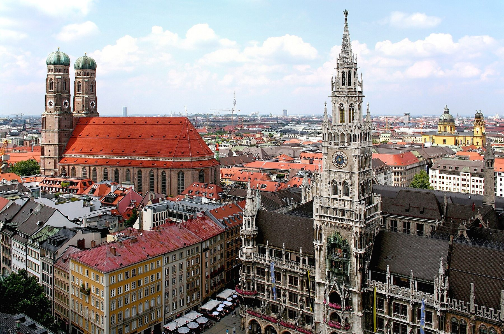
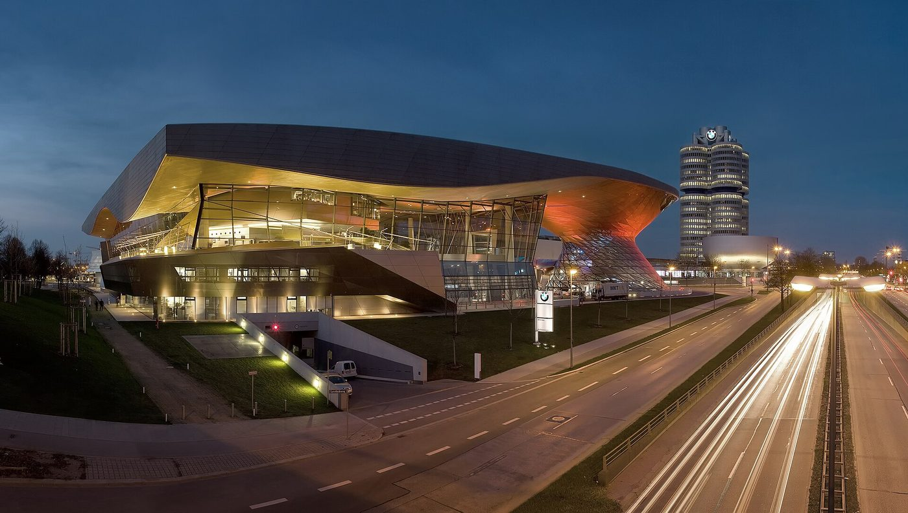
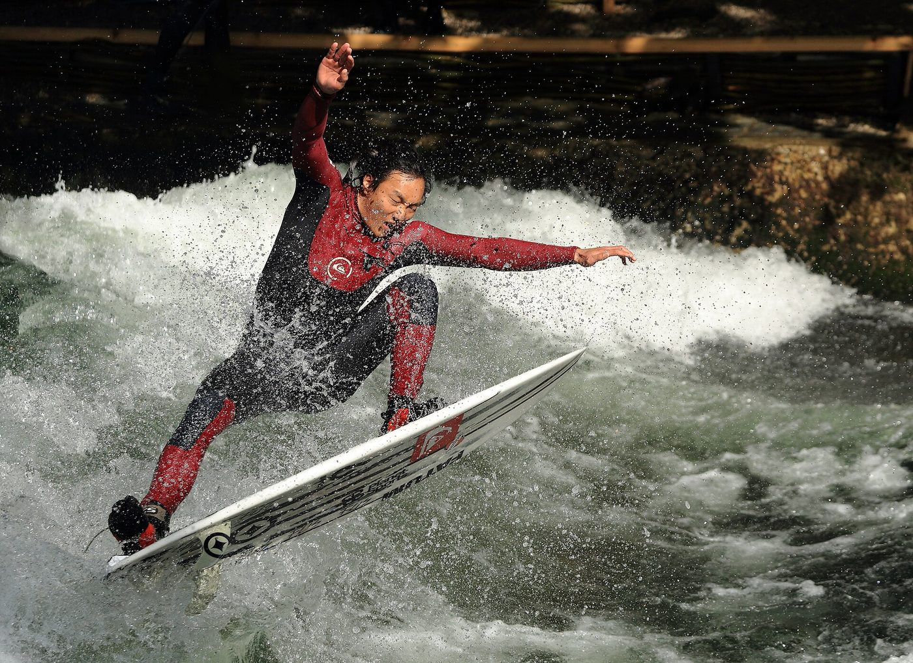
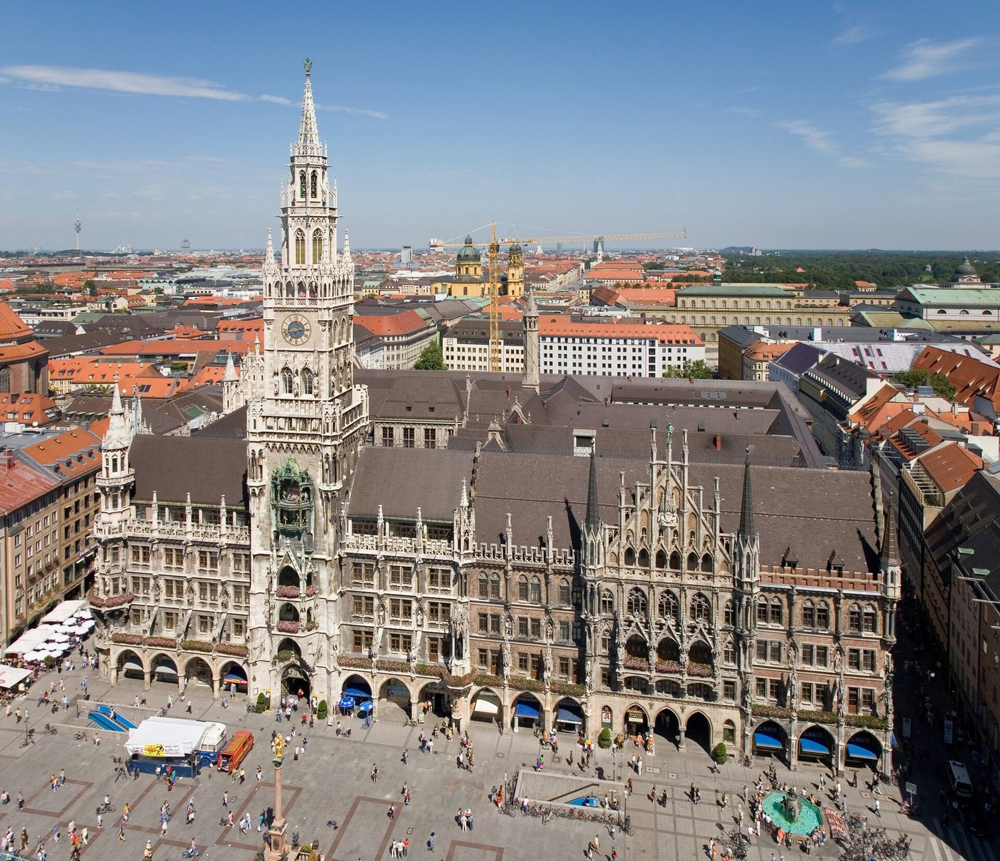
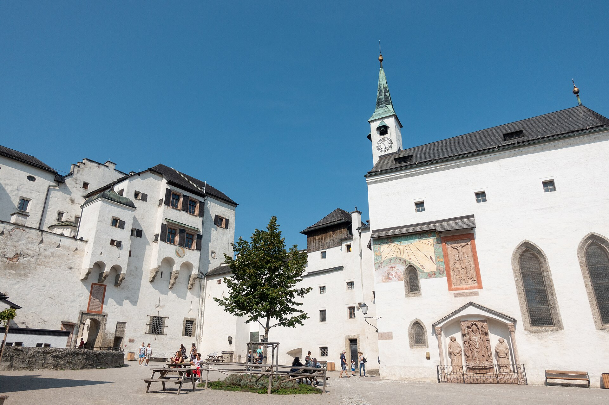
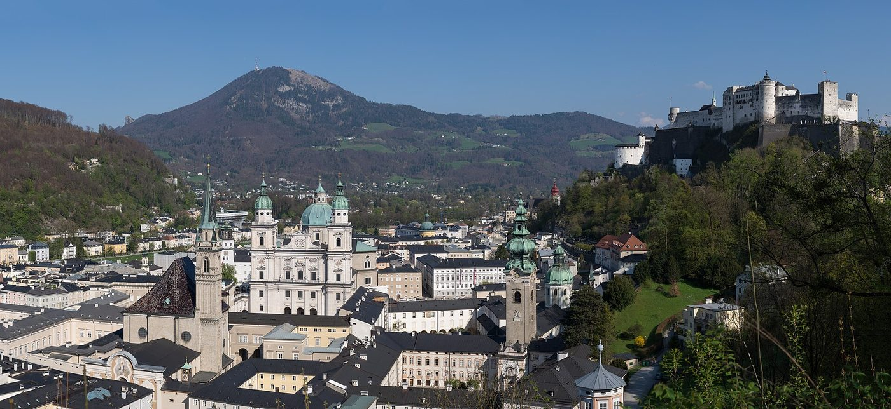
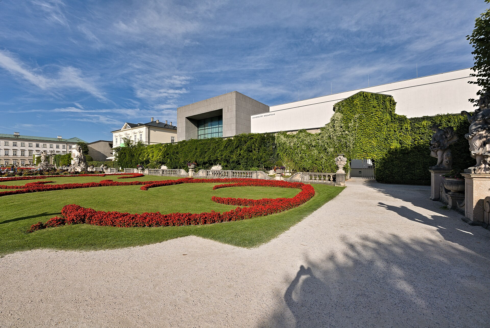
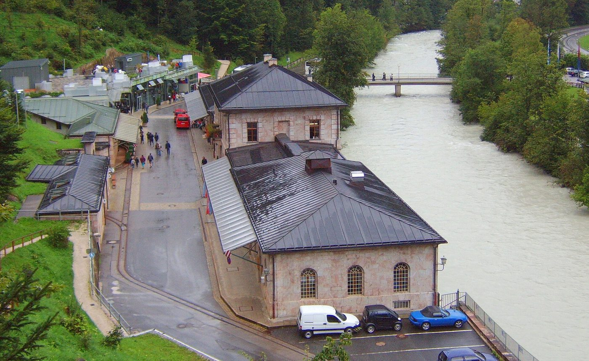
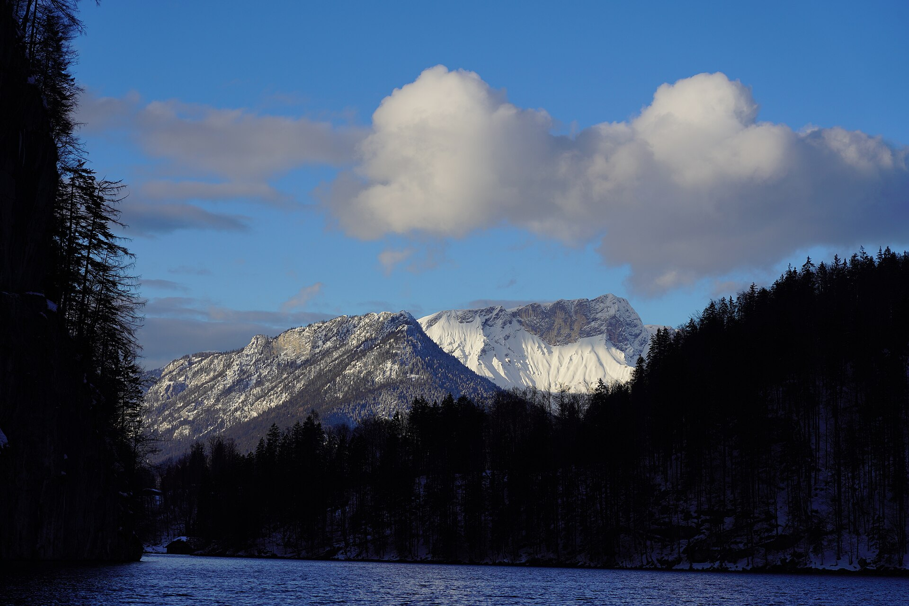

Miért október 23–28.? Mert a baráti nap szombaton van Münchenben, és ez a hét fix pontja. Ahhoz, hogy a szombat teljes egészében a baráté legyen, pénteken kell kiérni — így lesz a müncheni két éj a péntek és a szombat. Vasárnap átköltözés Salzburgba, onnan három éj, szerdán haza.
Okt. 23. magyar ünnep, tehát az indulás nyugatra csúcsforgalomba fut. Ellenszer: 05:00-s indulás. A szünet másik vége (okt. 31. – nov. 1. Allerheiligen és a bajor őszi szünet kezdete) továbbra is elkerülve — akkor már itthon vagyunk.
✅ A müncheni szállás megvan: MLOFT Apartments München, okt. 23–25., 2 éj, apartman terasszal és konyhasarokkal, 4 főre — 177 485 Ft. Lefoglalva.
✅ A salzburgi szállás is megvan: Book-A-Room Salzburg Apartment 33, Augustinergasse 30, Mülln — okt. 25–28., 3 éj, két hálószobás 90 m²-es apartman, 295 370 Ft. 🎉 Mindkét szállás lefoglalva, a szállásköltség fix: 472 855 Ft.
| Mit | Részletek | Státusz |
|---|---|---|
| Szállás 1. | MLOFT Apartments München — okt. 23–25. (2 éj), 177 485 Ft | ✔ lefoglalva |
| Szállás 2. | Book-A-Room Apartment 33, Mülln — okt. 25–28. (3 éj), 295 370 Ft | ✔ lefoglalva |
| Baráti nap | okt. 24. (szombat), München | ◐ dátum áll, program nyitott |
| Sóbánya | Salzbergwerk Berchtesgaden — okt. 27. | ☐ opcionális |
| Umweltplakette | ✅ nem kell — a szállás a zónán kívül, a belvárosba tömegközlekedéssel mentek | ✔ lezárva |
| Parkolás München | MLOFT mélygarázs, 15 €/éj = 30 € | ✔ visszaigazolva |
| Parkolás Salzburg | a hirdetés ingyenest ír, a házigazda nem erősítette meg | ❓ nyitott |
A szállások részletei — cím, szoba, ár, be- és kicsekkolás, parkolás — a Napi program fülön, annál a napnál, amikor becsekkolunk.
A baráti nap szombat, és a barát Münchenben van. Ha pénteken kiérünk, a szombat egésze a baráté lehet — nem kell belőle levágni az érkezést vagy az indulást. Vasárnap már csak a rövid transzfer marad Salzburgba: 143 km, másfél óra, délelőtt. A hazaút pedig Salzburgból 545 km, nem Münchenből 653.
Az MLOFT Truderingben áll (Wasserburger-Land-Str., 11,6661 K), a Mittlerer Ring keleti szára 11,619 K körül fut — ~3,5 km margó. Az A8/A94 felől odahajtva egyszer sem lépsz be a zónába. A belvárosba U2-vel menj (Trudering állomás 800 m), és a zöld plakett kérdése fel sem merül.
Három éj egy helyen, egy kipakolás. A sóbánya innen 27 km, a Königssee 31. Két teljes nap marad (hétfő óváros, kedd sóbánya + Königssee) — ezért esett ki a korábbi „választható nap": Eisriesenwelt, Hallstatt, Haus der Natur. Az Eisriesenwelt nov. 1-jén zár, tehát nincs hova átrakni.
Okt. 24/25. éjjel óraátállítás (a baráti nap és a transzfer közti éjszaka, +1 óra alvás) — utána Salzburgban ~17:00-kor sötétedik. Minden szabadtéri program délelőtt és kora délután. Ez nem stílus, ez a nap hossza.
Menetidők: a fő szám a reális menetidő (4 fős család, 2–3 megállóval); zárójelben az ideális, megállás nélküli érték.
| Cím | Wasserburger-Land-Straße 8, Trudering — az Umweltzonén kívül |
|---|---|
| Egység | Apartman terasszal és konyhasarokkal, 4 főre |
| Ár | 177 485 Ft (~444 €) — végösszeg, 2 éjre |
| Értékelés | 9,0 (1 067 értékelés) |
| Booking | Booking.com |
✔ Lefoglalva — foglalási szám 5648602628. 🕒 Becsekkolás 15:00-tól, kicsekkolás ⚠️ legkésőbb 11:00 (nem 12:00!). 🔑 Önkiszolgáló terminál az 1. emeleti lobbyban — kell: név/foglalási szám, személyi vagy útlevél, kártya PIN-nel. Ha nincs ott senki: csengess a bejárattól balra („Reception"). 🅿️ Saját mélygarázs: 15 €/éj, két éjre 30 € — hely visszaigazolva ✔. 🚇 Trudering állomás 800 m (U2 + S4/S6). 📍 Útvonal
| Idő | Mi |
|---|---|
| 05:00 | Indulás Budapestről — magyar ünnep, az M1 délelőtt telik meg. Ezt bőven megelőzitek. |
| ~07:30 | Reggeli az első osztrák Raststationön |
| ~12:00 | Ebéd Linz környékén |
| ~15:00 | Érkezés Münchenbe (680 km) — pont a becsekkolás kezdetére |
| ~17:30 | 🛒 Rövid bevásárlás — kávé, tej, kocsikaja. REWE/Aldi/Edeka 400–500 m-re, 20:00-ig |
| este | Vacsora a szállás közelében |

| Idő | Mi |
|---|---|
| ~09:00 | Reggeli az apartmanban |
| ~09:30 | Trudering állomás (800 m) → U2 a belvárosba, ~20 perc |
| napközben | A baráti nap — a program a baráton múlik |
| délután | Szabad — a bevásárlás pénteken megvolt |
| este | Vacsora Münchenben |
Mindhárom ingyenes, és mindhez az autó a szállás parkolójában marad.
| Opció | Odajutás Truderingből | Idő | Belépő |
|---|---|---|---|
| ① Marienplatz + Viktualienmarkt | S4/S6 közvetlen, ~15 perc | fél nap | ingyenes (ebéd a piacon) |
| ② BMW Welt | S-Bahn → Marienplatz, onnan U3 Olympiazentrum, ~35 perc | 2–3 óra | ingyenes |
| ③ Englischer Garten + Eisbach | S-Bahn → Marienplatz, onnan U3/U6, ~25 perc | 2–3 óra | ingyenes |
Fizetős alternatívák, ha ő javasolja: Tierpark Hellabrunn (~50 €) vagy Olympiaturm (~40 €). 💡 A ① és a ③ egy napba fér (a belváros és az Englischer Garten egymás mellett van); a ② a város másik felén van, ahhoz külön blokk kell.
Zone M a teljes várost lefedi — Trudering, Marienplatz, Olympiazentrum és az Englischer Garten mind benne van.
| Opció | Ár | Megjegyzés |
|---|---|---|
| ✅ Gruppen-Tageskarte, Zone M | 19,70 € | 2–5 fő, korlátlan utazás, másnap 06:00-ig |
| 2× Single-Tageskarte | 20,20 € | 2026 januárjától a 6–14 éves gyerekek ingyen utaznak rajta |
| Egyszeri jegyek, egy irányba | 12,40 € | 2×4,20 € felnőtt + 2×2,00 € gyerek |
A gyerekek 11 és 13 évesen gyerekjeggyel utaznak (a gyerektarifa a 15. születésnapig tart), és a csoportos jegyen két gyerek egy személynek számít — ti négyen 3 helyet foglaltok az 5-ből. A csoportos jegy már a második utazástól megéri: egy reális szombat 4 szakasza egyedi jegyekkel 49,60 € lenne, a napijegy ~30 €-t spórol.
🎫 Truderingben vedd meg indulás előtt — az S-Bahnon nincs fedélzeti automata, csak buszon és villamoson. Állomási automata vagy app (MVGO / MVV-App, regisztráció nélkül is). Az automaták 2026. június óta alapból érvényesítve adják a jegyet; ha mégis „hier entwerten" áll rajta, kezeld le felszállás előtt. Bliccelés: 60 €.
⚖️ A 2× Single-Tageskarte csak 0,50 €-val drágább, viszont azzal a két felnőtt szétválhat napközben. Ha végig együtt maradtok, a csoportos a jó. A Deutschlandticket nem opció — havi 63 €, csak előfizetéssel.



| Idő | Mi |
|---|---|
| 07:30 | 🥐 Reggeli a Wimmer pékségben (372 m, vasárnap 07:00-tól) |
| ~08:45 | Indulás Münchenből. ⚠️ A kicsekkolás limitje 11:00 |
| 08:45–11:00 | München → Hellbrunn, ~150 km — A8 → A1 → A10 dél → Anif/Hellbrunn kijárat. Salzburg belvárosát nem érinted. |
| 11:00–14:00 | Schloss Hellbrunn + Wasserspiele |
| 14:00–14:30 | Hellbrunn → Mülln, ~7 km |
| 15:00 | Becsekkolás (ablak 15:00–21:00, 6 jegyű ajtókód) |
| Cím | Augustinergasse 30, Mülln — a Mönchsberg lábánál |
|---|---|
| Egység | Két hálószobás apartman, 90 m² — saját konyha, fürdőszoba, légkondi, mosogatógép |
| Ágyak | 1. háló: 2 franciaágy · 2. háló: 1 franciaágy + 1 kanapéágy |
| Ár | 831,30 € — végösszeg 3 éjre (takarítás 90 € és 21,30 € Ortstaxe benne). A Booking 295 370 Ft-ot mutatott ~355-ös árfolyamon. |
| Óvárostól | 0,8 km — 10 perc séta |
| Booking | Booking.com |
✔ Lefoglalva, vissza nem térítendő. 🔑 Nincs recepció — 6 jegyű ajtókód, e-mailben pár nappal előtte (ha 3 nappal előtte nincs meg, nézd a spamet). ⚠️ Előre jelezd a várható érkezési időt! ☎️ +43 699 10111222 · 💳 Készpénzt NEM fogadnak el. 🛒 Spar ~700 m (H–P 06:45–19:00) — de vasárnap és okt. 26-án zárva. 🍺 Az Augustiner Bräustübl a szomszéd. 📍 Útvonal
✅ A hely visszaigazolva, az ár megvan: 15 € éjszakánként, két éjre 30 € (~10 900 Ft). Ez korrekt ár, nem lehúzás — zárt mélygarázs Münchenben ennyiért rendben van; összevetésül a salzburgi Augustiner Bräu felszíni parkolója 16 €/nap.
Amit valójában fizettek: kényelmet, nem szükségszerűséget. Trudering kívül esik München parkolásmenedzsmentjén — a városnak 76 Parklizenzgebietje van, ezek a belső kerületekben, és a 15. kerületben egyedül a Messestadt Riem szabályozott (~2 km-rel keletebbre). Az utcai parkolás ott jó eséllyel ingyenes — a táblát érkezéskor nézzétek meg.
Mégis megéri, három okból:
| Ok | Miért |
|---|---|
| 1. A pénteki érkezés | 680 km, ~10 óra, két gyerek, péntek 15:00 egy lakóövezetben — pont akkor jönnek haza az ott lakók. Ez a legrosszabb pillanat helyet keresni. |
| 2. Az autó tele van | A salzburgi cucc bent marad, és szombaton végig áll (tömegközlekedéssel mentek). Péntek 15:00 → vasárnap 08:45 = ~42 óra. Zárt garázs vs. utca egy megpakolt, magyar rendszámos kocsinál érdemi különbség. |
| 3. Az arány | A teljes út 1,1–1,2%-a. Egy ~2 500–2 800 €-s úton 30 € nem döntési kérdés. |
👉 Ha viszont nem zavar az utcai parkolás, ez a 30 € valóban megspórolható — Trudering nem fizetős zóna. De akkor pénteken számolj 10-15 perc helykereséssel érkezés után.
Rövid válasz: ne. A német szupermarketek parkolói magánterületek, és a szabály mindenütt ugyanaz: „Parken nur für Kunden, für eine bestimmte Höchstdauer und nur mit Parkscheibe" — csak vásárlóknak, korlátozott ideig, parkolótárcsával.
| Mi | Miért baj |
|---|---|
| Nem bírság, hanem kötbér | Vertragsstrafe, amit a kocsi leállításával fogadsz el — jogilag érvényes és behajtható |
| Magáncégek ellenőriznek | Parkolótárcsa, sorompó vagy rendszámfelismerés. A kötbér a legtöbb szupermarketnél 10–30 €, alkalmanként |
| Éjszakára zárnak | A közeli Aldi Süd H–Szo 08:00–20:00, ünnepnap zárva — sok ilyen parkolót éjszakára lezárnak |
Két éjszakára ez biztos bukta, és a magyar rendszámot is megtalálják. Marad a két valódi opció: a 15 €/éjszakás mélygarázs, vagy az ingyenes utcai parkolás Truderingben (a környék nincs benne München parkolásmenedzsmentjében — a táblát nézd meg érkezéskor).
A szállás visszaigazolása szó szerint: „After payment, a few days before your arrival you will receive a detailed check-in guide including the 6-digit door code."
Ez egy láncolat, és minden szeme kell: fizetés → check-in útmutató → ajtókód → bejutás. Nincs recepció, tehát ha a kód nem jön meg, nincs kihez fordulni a helyszínen.
| Mikor | Mit csinálj |
|---|---|
| Most | Nézd meg, hogy a Bookingnál megadott kártya érvényes-e okt. 25-ig, van-e rajta keret 831,30 €-ra, és hogy a 3D Secure működik-e a telefonodon |
| Amikor terhelnek | A Booking szerint „bármikor előre felszámítható a teljes összeg" — figyeld a kártyaértesítőt |
| ⚠️ Okt. 22. (csüt.) | Ha eddig nincs meg a check-in útmutató a kóddal: nézd a spamet, és hívd őket. |
| Okt. 23. (péntek) | Ekkor már úton vagytok — ezért kell okt. 22-én lerendezni, itthonról |
☎️ +43 699 10111222 · Cím: Augustinergasse 30, 5020 Salzburg (Apartment Nr. 33). ❓ És amit még mindig nem mondtak meg: a parkolóhelyet. Három üzenet jött a két szállástól, egyik sem említi — ugyanabban a hívásban kérdezd meg.
A Kurzparkzone díja 2,20 €/óra, max. 3 óra, de csak hétfő–péntek 9:00–19:00 között. Vasárnap és ünnepnapokon ingyenes, időkorlát nélkül.
| Nap | Státusz | Díj |
|---|---|---|
| Vas. okt. 25. érkezés + éj | vasárnap → ingyenes, korlátlan | 0 € |
| Hét. okt. 26. | osztrák nemzeti ünnep → ingyenes, korlátlan | 0 € |
| Ked. okt. 27. | 9–19 fizetős — de a kocsi egész nap Berchtesgadenben van | 0 € |
| Sze. okt. 28. indulás ~9:00 | 9:00-ig ingyenes | 0 € |
Minden éjszaka ingyenes (19:00–09:00), és parkolótárcsa sem kell, mert szombatot nem töltötök Salzburgban.
⚠️ A táblát nézd, ne a szabályt. A Kurzparkzone igazoltan a Müllner Hauptstraße és az Augustinergasse 6. közötti szakaszra vonatkozik — a 30-as szám ezen kívül esik, és Mülln egyes utcái lakossági (Anrainer) parkolók, ahol vendég nem állhat.
Csak hétfő–péntek 9:00 és 19:00 között, és akkor is legfeljebb 3 órát. Minden más időben — este 19:00 után, reggel 9:00 előtt, egész vasárnap, egész ünnepnap — a Kurzparkzone ingyenes és időkorlát nélküli. Kedden 08:15-kor elhajtotok Berchtesgadenbe és ~17:00-kor értek vissza, tehát a fizetős ablakból alig marad valami: legfeljebb 2 óra × 2,20 € = 4,40 €.
| Parkplatz Mülln – Augustiner Bräu | |
|---|---|
| Cím | Lindhofstraße 7, 5020 Salzburg (47,80541 É / 13,03384 K) |
| A szállástól | ~530 m, 7–9 perc séta az Augustinergasse 30-tól |
| Nyitva | Parkplatz 1: non-stop, 24 órában · Parkplatz 2: naponta 14:30–éjfél |
| Tarifa | 1,00 € / 30 perc · napi maximum 16,00 € (2,2 m felett 2 €/30 perc, max. 40 €) |
| Fizetés | ⚠️ CSAK KÉSZPÉNZ |
| Kapacitás | 320 hely |
💡 A Bräustübl-trükk: a sörház vendégei ingyen parkolnak a Parkplatz 2-n — a jegyet a söntéspénztárnál érvényesítik, külön behajtóval. A hétfői ebéd amúgy is ott van a tervben. Felső korlát, ha minden csődöt mond: 3 × 16 € = 48 €. Reálisan 0 €. 📍 Térkép
| Város | Hogyan | Amit tudni kell |
|---|---|---|
| Salzburg | 2025. május 1. óta négy szolgáltató: EasyPark · Park and More · Parkster · Presto-Parking | Ingyenes letöltés, percre pontos elszámolás, idő előtt lezárható és csak a valós időt fizeted |
| München | HandyParken München — a városé, az MVG/SWM üzemelteti. EasyPark és Parkster is működik | Nincs külön díja. FixParken (fix idő) vagy FlexParken (te állítod). GPS-szel megtalálja az automatát, az ellenőrzés rendszám alapján |
⚠️ De a ti két tényleges parkolási helyzetetekben ez nem segít: az Augustiner Bräu parkoló CSAK KÉSZPÉNZ (magánparkoló, nem városi Kurzparkzone — semmilyen app nem működik rajta), Münchenben pedig a szállás saját mélygarázsában álltok, nem az utcán.
👉 Egyetlen helyzet van, ahol az app tényleg jól jön: kedd 17:00–19:00 Müllnben, ha Berchtesgadenből visszaérve az utcán álltok meg. Az maximum 2 óra × 2,20 € = 4,40 €, percre pontosan. Regisztrálj indulás előtt, ne a járdaszélen — magyar rendszámmal is megy, de kell hozzá kártya és a rendszám felvitele.
🇦🇹 Osztrák nemzeti ünnep (Nationalfeiertag). A látnivalók, múzeumok és éttermek nyitva, az üzletek zárva — ezért kellett szombaton bevásárolni. A városban ünnepi forgalom van: a Festungra menj korán.
| Idő | Mi |
|---|---|
| 08:00 | Reggeli a Café Tomasellinél (860 m, 08:00-tól) — az óvárosban, úgyis arra mentek |
| ~09:30 | Gyalog indultok — az óváros 0,8 km. Az autó marad. |
| 10:00–13:00 | Festung Hohensalzburg (sikló + vár) |
| 13:00 | Ebéd az óvárosban (Getreidegasse környéke) — ⚠️ a Bräustübl csak 14:30-tól nyit |
| délután | Dóm, Residenzplatz, Mirabell-kert |
| ~15:30 | Augustiner Bräustübl hazafelé sétálva — ünnepnap 14:30-tól |
| ~17:00 | Sötétedik — vissza gyalog |



| Idő | Mi |
|---|---|
| 07:15 | 🥐 Bäckerei Ursprunger (509 m, 06:00-tól) — péksütemény a kocsiba |
| 07:45 | Indulás Müllnből — Königssee (Schönau) 31 km, ~40 perc |
| ~08:30 | Érkezés, parkolás a tóparti sétány előtt (~5–8 €) |
| 09:15 | Első hajó St. Bartholomäba (35 perc) → 09:50 |
| 09:50–12:10 | Templom, Malerwinkel, tóparti séta, korai ebéd a vendéglőben |
| 12:10 | Visszahajó → Seelände 12:45 |
| 13:00–13:15 | Königssee → Salzbergwerk Berchtesgaden, ~10 perc |
| 13:30–15:30 | Sóbánya (zárás 17:00, bőven van puffer) |
| ~16:15 | Vissza Müllnbe |
✅ Miért ez a sorrend? Mert a hajó az időjárásfüggő tétel, a bánya nem. Ha reggel köd vagy vihar miatt nem indul a járat, 08:30-kor tudjátok — átmentek a bányába (9:00-kor nyit), és délben visszajöttök a tóhoz. Fordítva ez nem működne: ha délután áll le a hajó, a nap fele oda.
🌧️ B-terv, ha a hajó ÉS a bánya is bukik (köd + ünnepi csúcs): Malerwinkel-séta a tóparton (ingyenes, hajó nélkül is jár, ~1 óra) + Berchtesgaden óváros. Gyalogos, jegy nélkül, és nem kell hozzá semmi, ami elromolhat. A bánya 17:00-ig nyitva van, tehát a valószínű forgatókönyv amúgy is csak annyi, hogy csúszik a nap.
⛴️ Ellenőrzött őszi menetrend (okt. 12-től): a Salet-járat NEM megy, csak St. Bartholomä. Indulás Seeländéből kb. félóránként 09:15-től 16:00-ig; vissza St. Bartholomäból 10:00-tól 16:50-ig — a 16:50 az utolsó, azt ne késsétek le! Menetidő ~35 perc, nincs WC a hajón. Ár 23,40 €/fő oda-vissza (felnőtt), 4 főre ~70–75 €. Köd/vihar esetén leállhat: +49 8652 9636-96.


| Idő | Mi |
|---|---|
| 06:45–07:30 | 🥐 Ursprunger pékség 06:00-tól (509 m) vagy Spar 06:45-től |
| ~08:00 | Kicsekkolás és indulás (ablak 06:00–10:00) |
| ⚠️ 9:00 előtt indulj el az utcáról — akkortól él a fizetős parkolás | |
| ~14:30–15:30 | Budapest (545 km) |
~15:30–16:00 Budapest. A szünetből még négy nap marad itthon (okt. 30., 31., nov. 1.).
A nevek kattinthatók — a hivatalos oldalra visznek (nyitvatartás, jegy), a 📍 pedig a térképre.
| Látnivaló | Nap | Nyitva | Belépő (4 fő) | Megjegyzés |
|---|---|---|---|---|
| BMW Welt 📍 | 2. | naponta | ingyenes | Baráti nap opció |
| Festung Hohensalzburg 📍 | 4. | 9:30–17:00, utolsó belépő 16:30 | 53,00 € (all-inclusive) | Pénztárnál · nincs családi jegy · 9:30-kor ott |
| Salzburg óváros, Mirabell 📍 | 4. | — | ingyenes | Getreidegasse, Dóm |
| Salzbergwerk Berchtesgaden 📍 | 5. | 9:00–17:00 | 67 € | Nyári rend nov. 8-ig |
| Königssee 📍 | 5. | hajó: ellenőrizni | ~60–70 € (becslés) | Késő őszi menetrend ritkább |
| Hellbrunn + Wasserspiele 📍 | 3. | 9:30–17:30, utolsó belépő 16:30, nov. 1-ig | 40 € családi | Vízijátékok — lelocsol! |
| — | — | — | Kiesett a 3 salzburgi éjjel |
Nem döntés volt, hanem a 3 salzburgi éj következménye: elveszett a „választható nap". Az Eisriesenwelt és a Hellbrunn nov. 1-jén zár, tehát nincs hova átrakni. A Hellbrunn (5 km) a vasárnapi becsekkolás előtt még visszaszerezhető.
Salzburgi bázisról 222 km / 3 óra egy irányba. Idősávos jeggyel, októberi napfénnyel ez egy teljes nap vezetéssel. Ez a Salzburg-váltás ára, és tudatos.
A két müncheni éjből a teljes szombat a baráté, a péntek utazónap — fizetős beltéri múzeumra nem terveztünk. A BMW Welt viszont ingyenes, az belefér a baráti napba.
90 km Münchentől, 180 Salzburgtól. Salzburgi bázisról értelmetlen.
Közelebb van (19 km), mint Berchtesgaden, de 4 főre ~102 € a berchtesgadeni 67 € helyett. Ugyanaz az élmény, drágábban.
230 € egy kilátásért, ami okt. végén többször felhőben van, mint nem — illetve 300 km és egy teljes nap egy felemás élményért.
4 fő, 5 éjszaka (2 München + 3 Salzburg), saját autó. Mindkét szállás lefoglalva — München 177 485 Ft (~487 €), Salzburg 831,30 € (~302 800 Ft). Minden forintérték a 2026-09-18-i EKB középárfolyamon: 364,28 Ft/EUR. A salzburgi euróban terhel, tehát az a szám az árfolyammal mozog.
| Tétel | Reggeli nélkül | Reggelivel |
|---|---|---|
| MLOFT Apartments München, 2 éj ✔ lefoglalva | 487 € | 487 € |
| Book-A-Room Apartment 33, 3 éj ✔ lefoglalva | 831 € | 831 € |
| Összesen | 1 319 € | 1 319 € |
A két oszlop azonos, mert mindkét szállás apartman — nincs szállodai reggeli, viszont mindkettőben van konyha. Ez az étkezési tételt is lefelé húzza, és okt. 26-án külön ér: az osztrák nemzeti ünnep miatt zárva vannak az üzletek. A salzburgi 738 € három éjre, 90 m²-es kétháló apartmanra ~246 €/éj — a Motel One két szobája 503 € lett volna, de konyha és ingyenes parkoló nélkül.
Alapfeltevés: ~1 620 km összesen (680 oda + 143 transzfer + 545 haza + ~250 helyi). PHEV, autópályán benzinnel, 7–8 l/100 km — a 7 az alsó becslés, nem az átlag.
| Tétel | Becslés |
|---|---|
| Üzemanyag (~117–134 l, DE/AT/HU vegyes ár) | 205–240 € |
| Osztrák 10 napos vignetta | ~13 € |
| Magyar e-matrica D1, havi (M1, oda és vissza) | ~14 € |
| Müncheni napijegy (Gruppen-Tageskarte M, szombat) | 19,70 € |
| Parkolás München (2 × 15 €, hely visszaigazolva) ✔ | 30 € |
| ❓ Parkolás Salzburg — MÉG NEM ISMERT | ? |
| Összesen (a salzburgi parkolás nélkül) | ~282–317 € |
A hazaút végig a Wien-korridoron megy, tehát nincs külön fizetős alagút, és a magyar szakaszra ugyanaz a havi e-matrica jó, mint odafelé. Ha a salzburgi szálláson tudsz tölteni, a helyi napok benzinköltsége lejjebb megy.
| Tétel | Alsó | Felső |
|---|---|---|
| 6 nap, 4 fő — mindhárom étkezés kint (pékség/kávézó + étterem) | 660 € | 960 € |
| Tétel | Összeg |
|---|---|
| Hellbrunn — családi jegy (2 feln. + 2 gyerek) | 40 € |
| Festung Hohensalzburg (all-inclusive, 4 fő) | 53,00 € |
| Salzbergwerk Berchtesgaden | 67 € |
| Königssee hajó, St. Bartholomä oda-vissza (23,40 €/fő) | ~70–75 € |
| BMW Welt | ingyenes |
| Összesen | ~230–240 € |
| Alsó | Felső | |
|---|---|---|
| Szállás (München + Salzburg) ✔ fix | 1 319 € | 1 319 € |
| Parkolás München (2 × 15 €) ✔ | 30 € | 30 € |
| ❓ Parkolás Salzburg | ? | ? |
| Közlekedés | 252 € | 287 € |
| Étkezés (6 nap, végig kint) | 660 € | 960 € |
| Programok (Hellbrunnal) | 230 € | 240 € |
| Összesen (a salzburgi parkolás nélkül) | ~2 491 € | ~2 836 € |
✔ A müncheni parkolás megvan: 15 €/éj, két éjre 30 €. ❓ A salzburgi hely még nincs megerősítve — az marad „?" a táblázatban, amíg a házigazda nem válaszol. Nem tippelek bele kitalált értéket.
A kártya (24/48/72 óra) tartalmazza a FestungsBahnt és a tömegközlekedést. Két teljes salzburgi nappal valószínűleg NEM jön ki — a keddi nap Berchtesgadenben megy el, ami nincs benne, a Haus der Natur és a Hellbrunn pedig kiesett. Nézd meg, de ne számíts rá.
A szállás a Trudering állomástól 800 m-re van (10 perc séta). Trudering csomópont: a felszínen az S4 és S6, alatta az U2 — a kettő között átjáró van.
Wasserburger Landstr. 8 → Trudering állomás: ~800 m, 10 perc gyalog. Ezt a szállás adatlapja és a vendégértékelések is így adják meg („Trudering U-Bahn/S-Bahn station is 10 minutes on foot"). Trudering csomópont, nem egy megálló: a felszínen az S4 és S6, alatta az U2, a kettő közt átjáróval. Ez a 10 perc séta a teljes „ráhordás" — nincs szükség buszra, és a belvárosba menet átszállni sem kell. Ha mégis ajtótól ajtóig útvonalat akarsz, az MVGO vagy az MVV-App megtervezi; a Zone M napijegy minden helyi járatra érvényes.
| Hova | Hogyan | Idő |
|---|---|---|
| Belváros (Marienplatz) | S4 vagy S6, közvetlen | ~13–15 perc |
| BMW Welt (Olympiazentrum) | U2 → Scheidplatz → U3 | ~30–35 perc |
| Englischer Garten (Universität) | S-Bahn → Marienplatz, onnan U3 vagy U6 | ~25 perc |
💡 A Scheidplatz a jó trükk: négyvágányos állomás, ahol az U2-ről az U3-ra ugyanarról a peronról lehet átszállni, és a csatlakozásokat összehangolják. A BMW Welthez tehát nem kell bemenni a belvárosba.
Az U3 végigmegy mindenen, ami kell: Olympiazentrum – Scheidplatz – Münchner Freiheit – Universität (Englischer Garten) – Odeonsplatz – Marienplatz – Sendlinger Tor. Az U2 Truderingből: Kreillerstraße – Innsbrucker Ring – Giesing – … – Sendlinger Tor – Hauptbahnhof – Königsplatz – … – Scheidplatz.
Gruppen-Tageskarte, Zone M: 19,70 € — 2–5 fő, korlátlan utazás, másnap 06:00-ig. A Zone M a teljes várost lefedi. A gyerekek 11 és 13 évesen gyerekjeggyel utaznak, és két gyerek egy személynek számít — ti négyen 3 helyet foglaltok az 5-ből.
🎫 Truderingben vedd meg indulás előtt — az S-Bahnon nincs fedélzeti automata, csak buszon és villamoson. Állomási automata vagy app (MVGO / MVV-App). Az automaták 2026 júniusa óta alapból érvényesítve adják a jegyet; ha mégis „hier entwerten" áll rajta, kezeld le felszállás előtt. Bliccelés: 60 €.
| Mi | Mikor | Ár | Hol vedd |
|---|---|---|---|
| Magyar e-matrica D1, havi | M1, oda és vissza | ~5 500 Ft | ematrica.nemzetiutdij.hu vagy benzinkút |
| Osztrák vignetta, 10 napos | A1/A10, végig | ~13 € | ASFINAG vagy benzinkút a határ előtt |
| Német autópálya | — | ingyenes személyautóval | — |
⚠️ Az osztrák digitális vignettánál az érvényesség 18 nappal késhet (elállási jog), ha online veszed és nem mondasz le róla kifejezetten. Vagy vedd meg jó előre, vagy egy benzinkúton a határ előtt — ott azonnal érvényes.
Nincs külön fizetős alagút vagy hídvám az útvonalon. A Wien-korridor (A1/A21/S1/A4) és a Salzburg–Berchtesgaden szakasz (rövid A10 + B160) is a vignettával megvan. A Tauern-alagút külön díja jóval délebbre kezdődik, titeket nem érint.
| Tétel | Hol | Mennyi | Megjegyzés |
|---|---|---|---|
| ✔ MLOFT mélygarázs | München | 15 €/éj = 30 € | Hely visszaigazolva, ár megvan. Lezárva. |
| ❓ Salzburgi parkolóhely | Mülln | ismeretlen | A hirdetés ingyenest ír, a házigazda nem erősítette meg |
| ⚠️ Ortstaxe | Salzburg | 3,55 €/fő/éj | 21,30 € már benne van, de 42,60 €-ig mehet — tisztázd érkezéskor |
| Takarítási díj | Salzburg | 90 € | ✔ Már benne a 831,30 €-ban |
| Königssee parkolás | Schönau | ~5–8 € | Fizetős parkoló a tóparti sétány előtt |
| Salzburgi utcai parkolás | Mülln | 0–48 € | Reálisan 0 — lásd a parkolási szekciót |
| Müncheni idegenforgalmi adó | München | nincs | Münchenben nem szednek turistaadót |
💳 A salzburgi szálláson NEM fogadnak el készpénzt (Visa/Mastercard/EC). A Königssee-hajónál és az Augustiner Bräu parkolónál viszont KELL készpénz.
A döntés: pénteken bevásároltok valamit (ital, kocsikaja, kávé), a többi étkezés kint megy. Ez működik — a zárvatartás a boltokra vonatkozik, a vendéglátásra nem. Egyetlen szűk keresztmetszet van, a keddi 07:45-ös indulás, és arra is van pékség.
| Nap | Reggeli | Ebéd | Vacsora |
|---|---|---|---|
| Pé 23. | Raststation útközben | Raststation, Linz környéke | Trudering, a szállás közelében |
| Szo 24. | Bäckerei Traublinger (284 m, 06:30) vagy a belvárosban | Viktualienmarkt standjai | Hofbräuhaus / Augustiner-Keller |
| Vas 25. | Wimmer pékség, 07:00-tól (372 m) | Gasthaus zu Schloss Hellbrunn | Bräustübl, vas. 14:30-tól |
| Hé 26. | Café Tomaselli, 08:00-tól (860 m) | Óváros, Getreidegasse | Bräustübl, ünnepnap 14:30-tól |
| Ke 27. | ⚠️ Bäckerei Ursprunger, 06:00-tól (509 m) | St. Bartholomä vendéglő | Mülln: M32, Irodion, Humboldt |
| Sze 28. | Ursprunger 06:00 vagy Raststation | Útközben | Itthon |
| Hely | Táv | Nyitva |
|---|---|---|
| Bäckerei Wimmer | 372 m | H–Szo 06:00–18:00 · Vas 07:00–18:00 ⬅ a vasárnapi megoldás |
| Discount-Bäckerei Ratsch | 346 m | H–P 06:00–18:00 · Szo 06:00–17:00 · Vas 07:00–17:00 |
| Bäckerei Traublinger | 284 m | H–P 06:30–18:00 · Szo 06:30–12:30 · Vas 08:00–12:00 |
| Che Follia (kávézó) | 334 m | K–Szo 08:00–18:00 · Vas 10:00-tól — a vasárnapi induláshoz késő |
| Hely | Táv | Nyitva |
|---|---|---|
| Bäckerei Ursprunger | 509 m | K–P 06:00–13:00 · Szo 06:00–12:00 ⬅ a keddi és szerdai megoldás |
| Café Tomaselli (Alter Markt) | 860 m | H–Szo 07:00–21:00 · Vas/ünnep 08:00–21:00 |
| Café Bazar (Schwarzstraße 3) | 930 m | H–Szo 07:30-tól · Vas/ünnep 09:00-tól, reggeli végig |
| M32 (Mönchsberg) | 482 m | H–V 09:00–23:00 |
| Rainberg (kávézó) | 343 m | Sze–Szo 08:00–17:00 · Vas/ünnep 09:00 — hétfőn zárva |
⚠️ A keddi reggel a kritikus: 07:45-kor indultok Königssee felé, és ekkor még egyetlen kávézó sincs nyitva Müllnben. Az Ursprunger viszont 06:00-tól süt — vegyetek ott péksüteményt 07:15 körül, és a kocsiban vagy a tóparton reggelizzetek.
Viktualienmarkt (München) — standok, a leggyorsabb és a legjobb ár-érték. Augustiner Bräustübl (Mülln) — önkiszolgáló, a szállás szomszédja; ⚠️ hétköznap 15:00-tól, szombat/vasárnap/ünnepnap 14:30-tól. Ebédre hétköznap nem jó, vacsorára tökéletes. St. Bartholomä — a tóparti vendéglő nyitva a hajómenetrend alatt. Mülln esti opciói: M32 (09:00–23:00, kilátás), Irodion (görög, 17:00-tól), Humboldt (10:30–23:00).
A boltok a szállástól 400–500 m-re: REWE (Hafelhofweg 3, H–Szo 07:00–20:00) · Aldi Süd (Bognerhofweg 5, 08:00–20:00) · Edeka Sanetra (Bognerhofweg 7, 07:00–20:00). Mind vasárnap és ünnepnap zárva.
👉 Pénteken ~15:00-kor becsekkoltok, a boltok 20:00-ig nyitva — ez a nyugodt ablak, és ez az egyetlen bevásárlás, amire szükség van.
| Mire | Mit |
|---|---|
| Kávé/tea | Az apartmanba, indulás előtti kávéra (a Book-A-Roomban van kávéfőző) · tej hozzá |
| ✅ Nem kell — itthonról visztek, utána csapról töltötök (lásd lentebb) | |
| Kocsiba | müzliszelet · dió/mogyoró · keksz · csoki — a vasárnapi és a keddi útra |
| Gyümölcs | alma, banán, mandarin — ami két-három napot kibír |
Ennyi — három tétel. Reggelit, felvágottat, kenyeret nem kell venni, mert kint esztek; vizet sem, mert azt itthonról hozzátok. 💡 Ha kedden mégis bent reggeliznétek: a Spar (~700 m) kedden 06:45-tól nyitva — de az Ursprunger pékség ugyanakkor nyit és közelebb van.
Mindkét város csapvize kiváló, és korlátlanul iható. Salzburg: a vezetékes víz „von Natur aus so rein, dass es völlig unbehandelt getrunken werden kann" — 90%-ban felszín alatti készletekből (Glanegg, St. Leonhard, Wasserschiene), 10%-ban öt forráscsoportból. München: forrásfriss víz a bajor Alpokaljáról (Mangfalltal, Loisachtal); kemény víz (15,8 °dH), de iható.
👉 Ebből az következik, hogy nem kell 30 kg vizet cipelni.
| Mikor | Mennyi | Honnan |
|---|---|---|
| Péntek, az odaút | ~9 l (egy 6×1,5-es rekesz) 4 főre, 680 km-re | Itthonról |
| A többi nap | amennyi kell | Csapból, mindkét apartmanban |
| Keddi kirándulás | 4 palack | Előző este megtöltve a csapról |
💡 Vigyetek 4 újratölthető palackot — ez a tényleges megtakarítás, nem a vásárolt víz. Az éttermi ásványvíz négy főre naponta 15–20 €, és ezen a csapvíz nem segít; a kocsiban és a szálláson viszont teljesen kiváltja a vásárlást.
| Nap | Boltok | Vendéglátás |
|---|---|---|
| Vas 25. | ⛔ zárva (DE + AT) | ✅ nyitva — pékségek is |
| Hé 26. | ⛔ zárva Ausztriában (nemzeti ünnep) | ✅ nyitva — Tomaselli 08:00, Bräustübl 14:30 |
⛽ Tartalék: a benzinkutak shopjai vasárnap és ünnepnap is nyitva mindkét országban.
| Hol | Fizetés | Megjegyzés |
|---|---|---|
| Salzburgi apartman | ⚠️ CSAK KÁRTYA | Visa/Mastercard/EC — készpénzt nem fogadnak el, működő kártya kell |
| Parkplatz Mülln – Augustiner Bräu | ⚠️ CSAK KÉSZPÉNZ | max. 16 €/nap; az automata nagy címletre nem ad vissza |
| Augustiner Bräustübl | jellemzően készpénz | pultról pultra fizetsz |
| Königssee-hajó | készpénz vagy kártya | 23,40 €/fő oda-vissza |
| Königssee parkoló | készpénz | ~5–8 € |
| Belépők, autópálya, üzemanyag | kártya |
👉 200 € készpénz, sok 10-es és 20-as. Minden más mehet kártyáról.
| Helyszín | Parkolás |
|---|---|
| MLOFT Apartments München ✔ | Magánparkoló a helyszínen — itt hagyod az autót a szombati városnapra. |
| Book-A-Room Apt 33, Mülln ✔ | Ingyenes helyszíni parkoló (erősítsd meg). Tartalék: Parkplatz Mülln–Augustiner Bräu, 530 m, 1 €/30 perc, max. 16 €/nap. |
| Salzburg óváros | Altstadtgarage Mönchsberg (a hegy alatt), onnan gyalog a centrum. |
| Festung Hohensalzburg | A várnál nincs parkoló — a sikló alsó állomásához menj, vagy gyalog fel. |
| Salzbergwerk | Saját nagy parkoló a bejáratnál. |
| Königssee | Schönau am Königssee, fizetős parkolók a tóparti sétány előtt. |
| München városnézés | Ne vidd be az autót — U2 Truderingtől (800 m a szállástól). |
✅ Az MLOFT az Umweltzonén kívül van (Wasserburger-Land-Str., 11,6661 K — a Mittlerer Ring keleti szára 11,619 K, ~3,5 km margó). Odahajtani az A8/A94 felől plakett nélkül is szabad. ⚠️ A belvárosba viszont csak zöld plakettel lehet behajtani — ezért a városnézésre az U2 az ajánlott megoldás.
| Nappali csúcs | Éjszaka | Csapadék | |
|---|---|---|---|
| München, okt. vége | ~13–16 °C | 5–7 °C | októberben 9–12 esős nap |
| Salzburg, okt. vége | ~13 °C | ~3–6 °C | októberben 9 esős nap |
Napi 4–8 óra napsütés, és az óraátállítás után ~17:00-kor sötétedik. Ezért van minden szabadtéri program délelőttre és kora délutánra téve.
| Mikor | Mi | Mit visz |
|---|---|---|
| Vas — Hellbrunn | A vízijátékok tényleg lelocsolnak, ~13 °C-ban | Vízálló kabát + teljes váltás ruha, külön táskában, a csomagtartó tetején |
| Ke — Königssee hajó | A tavon szeles és hidegebb, mint a parton | Sapka, sál, kesztyű — nem luxus |
| Ke — sóbánya | Odabent állandó ~12 °C, védőruhát adnak | Alá pulóver, kényelmes cipő |
| Hé — Festung | Köves, lépcsős, a magasban szeles | Vízálló, jó talpú cipő |
Okt. végi Salzburg + Alpok: 5–12 °C, eső reális, hegyen akár havazás. A sóbányában és a Königssee partján hideg és szeles lehet — sapka, kesztyű kell.
Kattints egy sorra a kipipálásához — a böngésző megjegyzi.
A müncheni oldal teljesen le van zárva. Egyetlen ismeretlen maradt a tervben: a salzburgi parkolóhely.
Kattints egy sorra a kipipálásához — a böngésző megjegyzi.